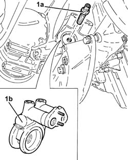
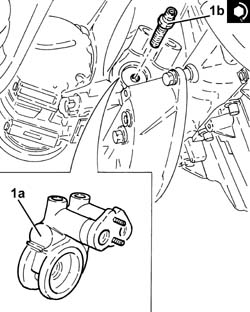

1084B34 cartridge engine oil filter support - r + r
- Path
- Procedures > 10 ENGINE > 1084 ENGINE LUBRICATION SYSTEM > 1084B engine oil lubrication circuit > 1084B34 cartridge engine oil filter support - r + r
- Kind
- repair procedure (removal / refitting; the operation number is the code)
- Applies to
- engines: 2.4 JTD 20v; all production periods
- Interactive page
- https://sloeber94.github.io/elrnDB-a156/en/#/3237885
Applies to: engines: 2.4 JTD 20v; all production periods
 Removing
Removing
 Refitting
RefittingPosition the vehicle on the ramp.
Proceed with removal 7055B54 under-engine guard - r r .
Proceed with removal 1076A46 heat shield for catalytic preconverter r r .
Proceed with removal 1076B70 exhaust pipe between pre-catalytic converter and catalytic converter - r r .
Proceed with removal 1080B40 catalytic pre-converter - r r .
Proceed with removal 1084B30 engine oil filter r r .
Proceed with removal 1084C38 engine oil delivery and return pipes to cooling radiator - r + r .
1. Undo the connector (1a) and remove the engine oil cartridge filter mounting (1b).

Applies to: engines: 2.4 JTD 20v; all production periods
Refitting
Removing1. Refit the engine oil cartridge filter mounting (1a) in its seating and secure it with the connector (1b) to the specified torque.
 | Fastening | Component | Ø | Value (daNm) |
|---|---|---|---|---|
1b | Connector | OIL FILTER MOUNT | M20 | 3.6 |

Applies to: engines: 2.4 JTD 20v; all production periods
Proceed with refitting 1084C38 engine oil delivery and return pipes to cooling radiator - r + r .
Proceed with refitting 1084B30 engine oil filter r r .
Proceed with refitting 1080B40 catalytic pre-converter - r r .
Proceed with refitting 1076B70 exhaust pipe between pre-catalytic converter and catalytic converter - r r .
Proceed with refitting 1076A46 heat shield for catalytic preconverter r r .
Proceed with refitting 7055B54 under-engine guard - r r .
Refill the engine oil lubrication system - 0010T11 engine oil check level and top up .
Remove the car from the ramps.
Topics linked from this page (6)
- 1076A46 heat shield for catalytic preconverter r r
- 1076B70 exhaust pipe between pre-catalytic converter and catalytic converter - r r
- 1080B40 catalytic pre-converter - r r
- 1084B30 engine oil filter r r
- 1084C38 engine oil delivery and return pipes to cooling radiator - r + r
- 7055B54 under-engine guard - r r